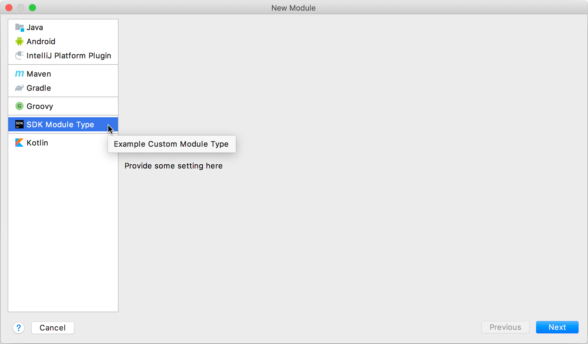

Supporting Module Types
IntelliJ Platform provides a set of standard module types. However, an application might need a module of a type that isn’t supported yet. This tutorial shows how to register a new module type and link it to the project creation procedure and the UI.
Pre-requirements
Create an empty plugin project, see Creating a Plugin Project.
1. Register a New Module Type
Add a new com.intellij.moduleType implementation with the IntelliJ Platform in the plugin.xml configuration file.
<extensions defaultExtensionNs="com.intellij">
<moduleType id="DEMO_MODULE_TYPE" implementationClass="org.intellij.sdk.module.DemoModuleType"/>
</extensions>
2. Implement ModuleType Interface
Create the DemoModuleType implementation based on ModuleType.
// Copyright 2000-2020 JetBrains s.r.o. and other contributors. Use of this source code is governed by the Apache 2.0 license that can be found in the LICENSE file.
package org.intellij.sdk.module;
import com.intellij.ide.util.projectWizard.ModuleWizardStep;
import com.intellij.ide.util.projectWizard.WizardContext;
import com.intellij.openapi.module.ModuleType;
import com.intellij.openapi.module.ModuleTypeManager;
import com.intellij.openapi.roots.ui.configuration.ModulesProvider;
import icons.SdkIcons;
import org.jetbrains.annotations.NotNull;
import javax.swing.*;
public class DemoModuleType extends ModuleType<DemoModuleBuilder> {
private static final String ID = "DEMO_MODULE_TYPE";
public DemoModuleType() {
super(ID);
}
public static DemoModuleType getInstance() {
return (DemoModuleType) ModuleTypeManager.getInstance().findByID(ID);
}
@NotNull
@Override
public DemoModuleBuilder createModuleBuilder() {
return new DemoModuleBuilder();
}
@NotNull
@Override
public String getName() {
return "SDK Module Type";
}
@NotNull
@Override
public String getDescription() {
return "Example custom module type";
}
@NotNull
@Override
public Icon getNodeIcon(@Deprecated boolean b) {
return SdkIcons.Sdk_default_icon;
}
@NotNull
@Override
public ModuleWizardStep[] createWizardSteps(@NotNull WizardContext wizardContext,
@NotNull DemoModuleBuilder moduleBuilder,
@NotNull ModulesProvider modulesProvider) {
return super.createWizardSteps(wizardContext, moduleBuilder, modulesProvider);
}
}
3. Implement Custom Module Builder
Create DemoModuleBuilder based on ModuleBuilder.
// Copyright 2000-2020 JetBrains s.r.o. and other contributors. Use of this source code is governed by the Apache 2.0 license that can be found in the LICENSE file.
package org.intellij.sdk.module;
import com.intellij.ide.util.projectWizard.*;
import com.intellij.openapi.Disposable;
import com.intellij.openapi.module.ModuleType;
import com.intellij.openapi.options.ConfigurationException;
import com.intellij.openapi.roots.ModifiableRootModel;
import org.jetbrains.annotations.NotNull;
import org.jetbrains.annotations.Nullable;
public class DemoModuleBuilder extends ModuleBuilder {
@Override
public void setupRootModel(@NotNull ModifiableRootModel model) throws ConfigurationException {
}
@Override
public ModuleType getModuleType() {
return DemoModuleType.getInstance();
}
@Nullable
@Override
public ModuleWizardStep getCustomOptionsStep(WizardContext context, Disposable parentDisposable) {
return new DemoModuleWizardStep();
}
}
4. Provide Custom Wizard Steps
Provide a straightforward implementation of UI components for the project creating stage.
Create a generic DemoModuleWizardStep based on ModuleWizardStep
// Copyright 2000-2020 JetBrains s.r.o. and other contributors. Use of this source code is governed by the Apache 2.0 license that can be found in the LICENSE file.
package org.intellij.sdk.module;
import com.intellij.ide.util.projectWizard.ModuleWizardStep;
import javax.swing.*;
public class DemoModuleWizardStep extends ModuleWizardStep {
@Override
public JComponent getComponent() {
return new JLabel("Provide some setting here");
}
@Override
public void updateDataModel() {
//todo update model according to UI
}
}
5. Creating a Module of New Type
After compiling and running the plugin in a development instance, create a new project. Select File | New | Module… A new module type and its settings panel are available in the Project Wizard.
